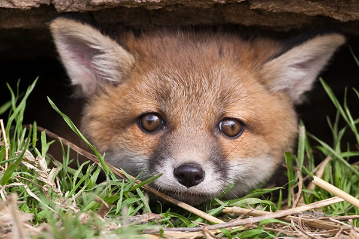
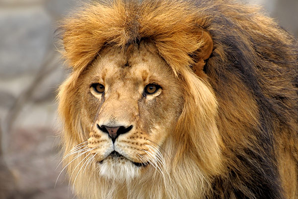
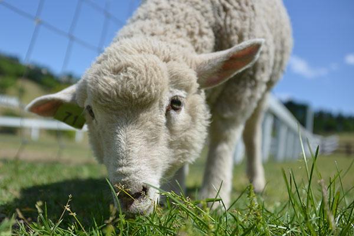

うさぎ1

全身が柔らかい体毛で覆われている小型獣である。最大種はヤブノウサギで体長 50-76cm。
キツネ
食性は肉食に近い雑食性。撮り、ウサギなどの小動物や昆虫を食べる。
ライオン
オスであれば体重は250キログラムを超えることもあり、ネコ科では虎に次いで2番目に大きな種である。ヒツジ
側頭部のらせん形の角と、羊毛と呼ばれる縮れた毛を持つ。原始的な品種では、短い尾など、野生種の特徴を残すものである。水牛
 粗末な食べ物でい成長して肉や乳を得られるだけでなく、牛よりも沼地での行動に適応しているため水田での労働力としても有用であり、経済的に非常に優れた動物である。
粗末な食べ物でい成長して肉や乳を得られるだけでなく、牛よりも沼地での行動に適応しているため水田での労働力としても有用であり、経済的に非常に優れた動物である。